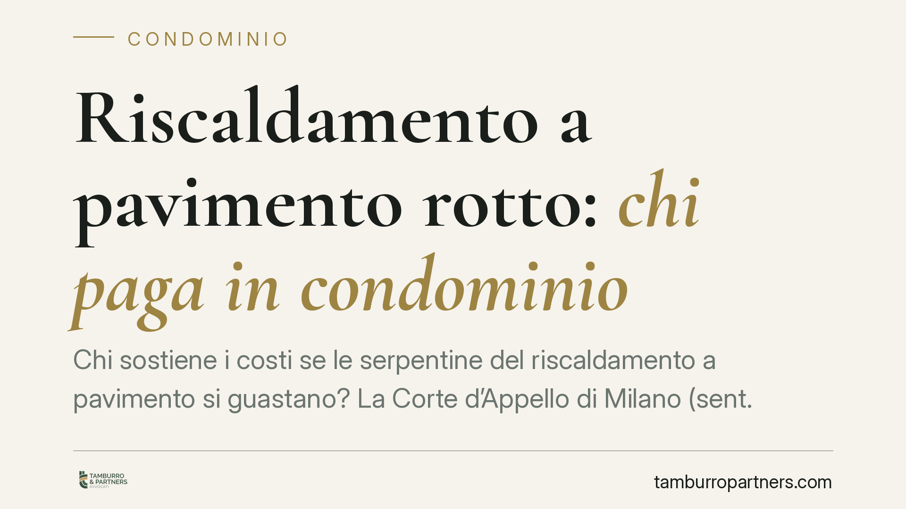

Riscaldamento a pavimento rotto: chi paga in condominio
Chi sostiene i costi se le serpentine del riscaldamento a pavimento si guastano? La Corte d'Appello di Milano (sent. 2745/2025) ha stabilito che gli impianti annegati nel massetto di un singolo appartamento sono di proprietà esclusiva del condomino, che ne risponde anche per i danni. Una decisione che ridisegna responsabilità e ripartizione delle spese.

Il caso deciso a Milano
La controversia nasce da una perdita originata dalle serpentine del riscaldamento a pavimento installate in un appartamento. Il condomino chiedeva che i costi di riparazione e i danni ricadessero sul condominio, sostenendo che l'impianto facesse parte delle parti comuni.
La Corte d'Appello di Milano, Sezione III, con la sentenza n. 2745/2025 ha respinto questa tesi. Le tubazioni annegate nel massetto dell'unità immobiliare servono esclusivamente quell'appartamento: sono quindi di proprietà esclusiva del condomino, che ne sopporta integralmente le spese di riparazione e risponde dei danni causati.
Inquadramento normativo
Il punto di partenza è l'art. 1117 del Codice civile, che elenca le parti comuni dell'edificio. La norma individua come comuni gli impianti fino al punto di diramazione verso le singole unità. Da quel punto in poi, la porzione di impianto che serve un solo appartamento rientra nella proprietà esclusiva del condomino.
Il criterio decisivo è quello della funzione: se la tubazione serve l'intero edificio o più unità, è comune; se serve un solo appartamento, è privata. Le serpentine sotto il massetto di una singola unità rispondono a quest'ultima logica.
Sul versante dei danni opera l'art. 2051 c.c., che disciplina la responsabilità per i danni cagionati dalle cose che si hanno in custodia. Il custode della cosa – qui, il condomino proprietario dell'impianto privato – risponde dei danni che ne derivano, salvo prova del caso fortuito. La responsabilità segue quindi la titolarità e la custodia del bene.
Cosa cambia in concreto
La decisione ha effetti pratici rilevanti per chi vive in condominio.
Per il condomino proprietario: la riparazione delle serpentine sotto il proprio pavimento è a suo carico. Se la perdita danneggia l'appartamento sottostante o le parti comuni, risponde anche di questi danni ai sensi dell'art. 2051 c.c. Non può rivalersi sul condominio per la sola circostanza che l'impianto sia termico.
Per il condominio e l'amministratore: non vi è obbligo di intervenire né di anticipare somme per guasti su impianti che servono una sola unità. Imputare queste spese al bilancio condominiale espone l'amministratore a contestazioni da parte degli altri condomini.
Per gli altri condomini: le spese per la riparazione di un impianto privato non possono essere ripartite in assemblea tra tutti. Una delibera che lo prevedesse sarebbe impugnabile.
Resta distinto il caso dell'impianto centralizzato che serve più unità: in quell'ipotesi le spese seguono le regole della comproprietà e i criteri millesimali o d'uso.
Il nodo assicurativo
Un aspetto spesso trascurato riguarda le coperture. La polizza globale fabbricati del condominio di norma non copre i danni originati da impianti di proprietà esclusiva. Il condomino dovrebbe invece verificare la propria polizza individuale, che può includere la garanzia per danni da acqua condotta o la responsabilità civile verso i vicini.
Cosa fare in concreto
- Verifica la titolarità dell'impianto prima di avviare qualsiasi richiesta: stabilisci se le tubazioni servono solo il tuo appartamento o più unità. È il criterio che decide a chi spetta la spesa.
- Documenta il guasto con fotografie, relazione tecnica di un termoidraulico e verbale dell'eventuale intervento. La prova dell'origine della perdita è determinante in caso di contestazione.
- Consulta le tue polizze – globale fabbricati e polizza individuale – per capire quali danni sono coperti e attiva tempestivamente la denuncia di sinistro.
- Evita delibere che imputino al condominio spese private: se sei amministratore, verbalizza la natura esclusiva dell'impianto; se sei condomino, valuta l'impugnazione di delibere illegittime nei termini di legge.
- Chiedi un parere legale prima di promuovere o resistere a una causa: la qualificazione dell'impianto e la prova del caso fortuito richiedono una valutazione caso per caso.
---
*Contributo informativo a cura di Tamburro & Partners - Avv. Giuseppe Tamburro. Non costituisce parere legale.*
Ogni condominio ha una storia a sé.
Se gestisci un'amministrazione e vuoi un confronto su una specifica questione condominiale, scrivi allo studio. Ti rispondiamo entro un giorno lavorativo.